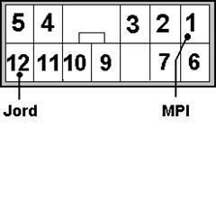
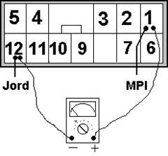

General information
The engine control system constantly monitors the input signals from the various sensors in the injection system and compares them with defined limit values. If a signal violates these limits, the control unit stores the fault code in the memory. The fault codes can be read out via the engine lamp or via LEDs on the control unit.
The diagnostics socket
The diagnostics socket is located to the left of the central console or to the left of the steering column.

If a voltmeter is connected between terminals 1 and 12, the pointer will deflect in accordance with the pattern shown in the fault code table.
The clearest results will be obtained by using a circuit tester or an LED with a series resistor..
Apperance of the fault codes
Fault code | Output signal | Description |
None | ECU fault | |
12 | Öpen circuit or short circuit in the air flow sensor circuit | |
13 | Öpen circuit or short circuit in the air inlet temperature sensor circuit | |
14 | Öpen circuit or short circuit in the throttle potentiometer circuit | |
15 | Öpen circuit or short circuit in the cylinder identification sensor circuit | |
21 | Öpen circuit or short circuit in the coolant temperature sensor circuit | |
22 | No change in voltage on the revolution sensor signal | |
23 | No change in voltage on the cylinder identification signal | |
24 | No change in voltage on the road speed sensor signal | |
25 | Öpen circuit or short circuit in the athmospheric pressure sensor circuit | |
31 | Öpen circuit in the knock sensor circuit | |
41 | Öpen circuit in the fuel injector circuit | |
44 | Fuelpump | |
0 | Normal, no fault code | |
Fault code list
0 | No fault in the system |
11 | Lambda sensor front |
12 | Air inlet sensor |
13 | Air inlet temperature sensor |
14 | Throttle potentiometer |
16 | Power supply to ECU |
18 | +50 –signal |
21 | Coolant temperature sensor |
22 | Revolution sensor (crankshaft) |
23 | Cylinder identification sensor (camshaft position sensor) |
24 | Road speed sensor |
25 | Altitude sensor (ATM) |
26 | Idle switch |
27 | Power steering switch |
28 | AC-switch |
31 | Knock sensor |
36 | Ignition timing – control signal (not saved) |
41 | Injection valve |
44 | Ignition coil or/and ignition output stage |
45 | ISC (stepper) motor position |
49 | AC relay |
54 | Immobilizer |
59 | Lambda sensor (rear) |
64 | Alternator FR-terminal |
Reading fault codes

If a voltmeter is connected between terminals 1 and 12, the pointer will deflect in accordance with the pattern shown in the fault code table.
The clearest results will be obtained by using a circuit tester or an LED with a series resistor.
Long blinks mean tens and short blinks mean units.
Deleting fault codes
Correct the faults in the system before you delete the fault codes.
1. | Disconnect the negative terminal from the battery for at least 30 seconds |
2. | Connect the negative terminal |
3. | Start the engine and warm it up thoroughly |
4. | Check that the fault codes have been deleted |